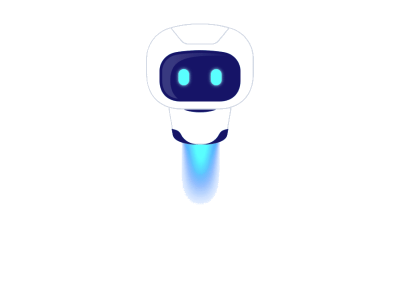

Loading, please wait...
×
Nearest Station
Home
FAQ
MITHRA

To:
Show Route
Find Nearest Station
Go to Chatbot
 Loading, please wait...
Loading, please wait...
Loading, please wait...
Loading, please wait...